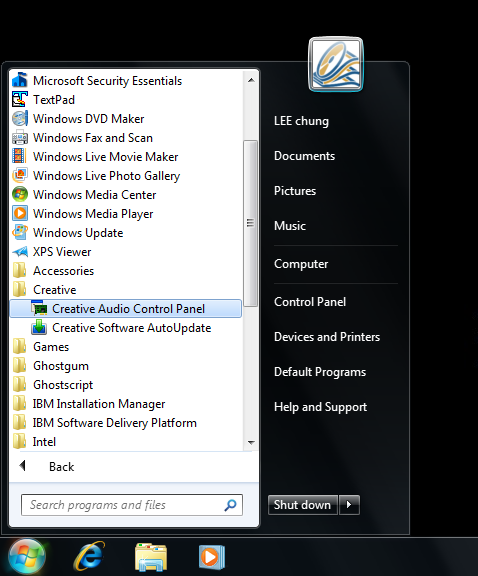
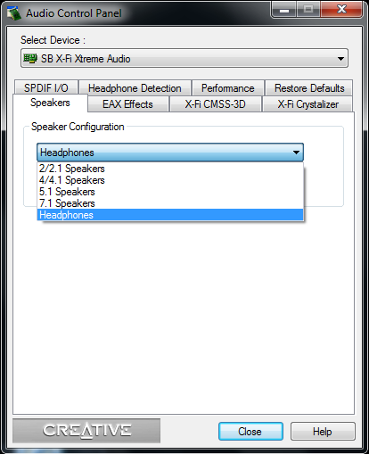
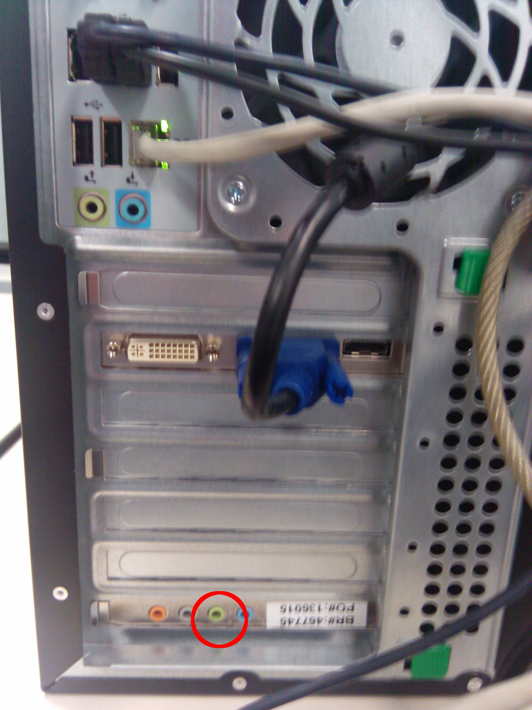

In the start Menu, choose "Creative" => "Creative Audio Control Panel".
In the "Speakers" tab, change the "Speaker Configuration" to "Headphones"
 
csound sinewave.orc sinewave.sco
The compiled sound is immediately played after you press Enter. If you prefer a file output, you have to add an extra flag "-Wo" and add a filename:
csound -Wo sinewave.wav sinewave.orc sinewave.sco
There are various text editor installed in the lab PC. We suggest using "TextPad" since it is intuitive and caused least problems about tabs and encoding
In the Start Menu, type "TextPad" and start the program
Drag and drop the source files to the program window for editing.
| Harmonic No | Amplitude |
| 1 | 5311 |
| 2 | 223 |
| 3 | 3886 |
| 4 | 961 |
| 5 | 6972 |
| 6 | 783 |
| 7 | 2487 |
| 8 | 646 |
| 9 | 702 |
| 10 | 1114 |
| 11 | 235 |
| 12 | 2188 |
csound additive.orc sinewave.sco -Wo add2.wav
If you don't attend the labs or you cannot finish the assignment in the lab, you need to submit the source code using the CASS. The instructions can be found here.
Please plug your earphones to the back of your workstation as shown with the following photo

Please submit your files "additive.orc" and "additive.sco" using CASS before Monday (22-Sep-2014). For any questions, please contact your TAs by email (*Only for question asking. Submissions please go to CASS.* ronmo@cse.ust.hk, bwuaa@cse.ust.hk). DO NOT submit the wav file; submitting the orc and sco files will be enough. Thank you.